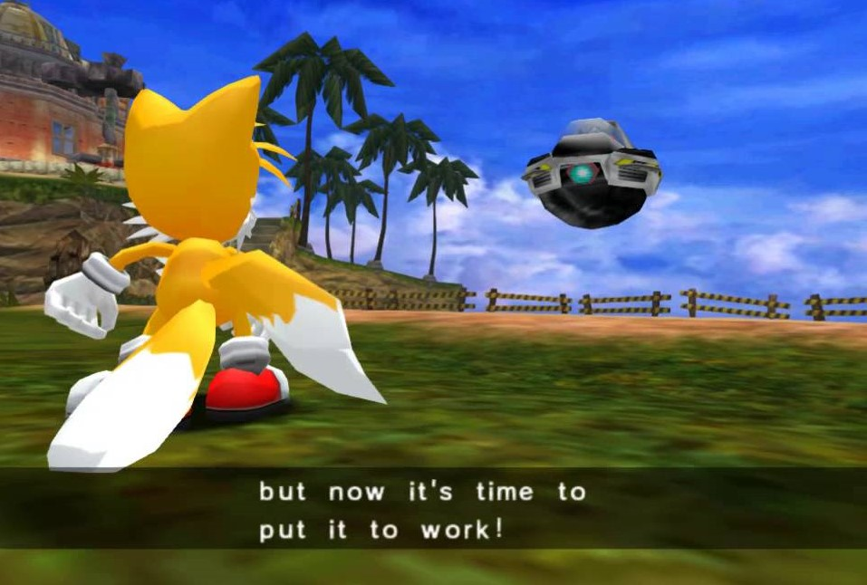
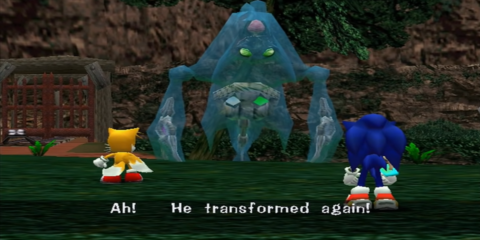
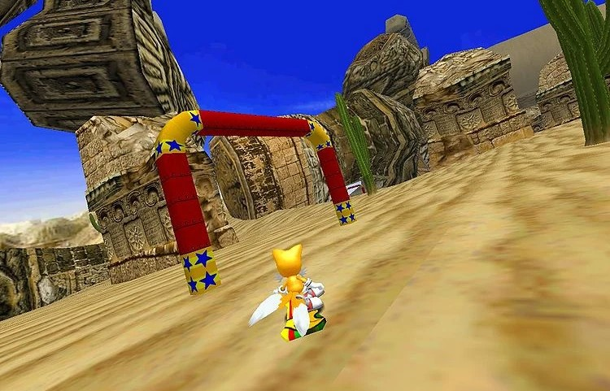
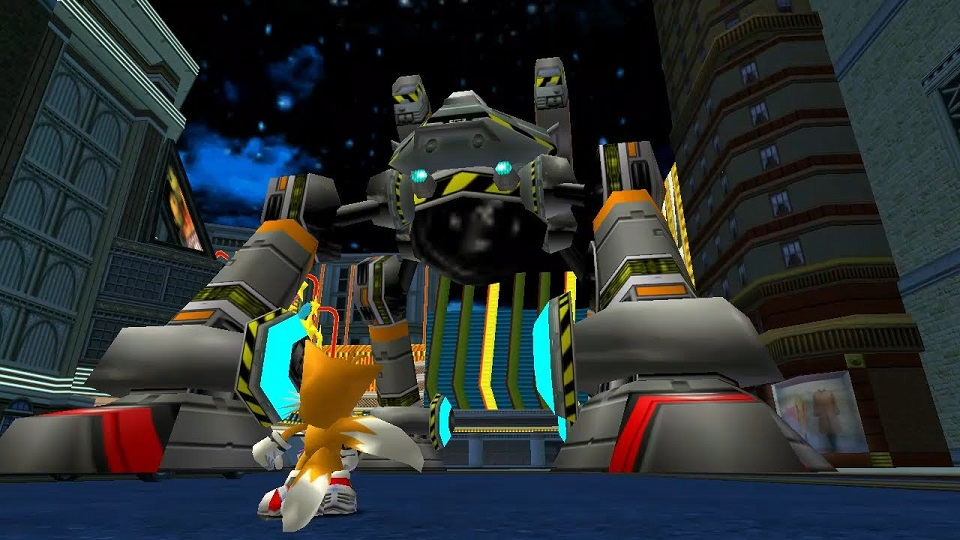
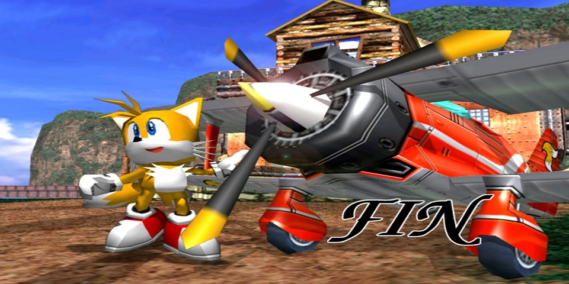

SADX - Campanha do Tails
Está um ótimo dia. O céu está claro e com poucas nuvens. Tails está pilotando seu avião, que apresenta problemas e fica fora de controle, caindo em Emerald Coast. Felizmente o menino raposa só ficou um pouco tonto e, quando recupera os sentidos, percebe que Sonic veio para ajudá-lo. Os dois voltam para o hotel. Após o resgate de Tails, Sonic pergunta o que aconteceu, e seu amigo raposa explica que estava testando um novo protótipo e mostra a Sonic a fonte de energia, uma Chaos Emerald. Tails pede para que Sonic vá com ele até sua oficina, em Mystic Ruins.
Antes de ir para a estação pegar o trem para Mystic Ruins, vá até os esgotos atrás de Twinkle Park para pegar o Jet Anklet. Isto fará Tails voar mais rápido. Agora sim, vá para a estação e de lá para a Mystic Ruins. Perto da Workshop vocês encontrarão Eggman. Ele exige a Esmeralda do Caos ou a pegará à força
Egg Hornet
Todos os bosses que se repetirem em campanhas diferentes, serão exatamente do mesmo jeito, portanto, assim como na campanha do Sonic, desvie dos mísseis e ele atacará com os dois ferrões. Esquive-se e ele ficará preso no chão, então o ataque. Repita o procedimento 3 vezes e o boss é derrotado.
Sua para sua oficina e pegue a Pedra do Vento. Vá para a caverna perto do lago com o explorador do lado e acesse à Windy Valley.
Stage 01 - Windy Valley
Os estágios de ação de Tails são bem simples, por excessão do ultimo. Seu objetivo é concluir as fases antes de Sonic, porem, você tem a vantagem do vôo, principalmente com as Jet Anklets. Os circulos verdes no ar dão mais velocidade ao vôo de Tails e servem como atalhos, dessa forma, use-os sempre que possivel para terminar as fases.
Em seguida, vá para a estação de trem e para Station Square. Da estação você pode ir direto para a Área do Cassino. Voe até o botão para ir para Casinopolis.
Stage 02 - Cassinopolis
Aqui Tails precisa vencer de Sonic na area que acessavamos com o Sonic ao perder as vidas no pimball com poucas argolas. Aqui não possuem circulos verdes de atalho, você precisará de fato ser mais rapido que Sonic, mas pelo menos nao precisa se preocupar em juntar 400 argolas ou passar a fase inteira sem perde-las uma vez
Pegue a pedra do Gelo naquele beco da area do Cassino - caso voce vôe para cima, tem um emblema no alto - e vá para Mystic Ruins Pegue a Pedra do Gelo. Vá para a estação e pegue o trem para Mystic Ruins, uma caverna se abrirá. Entre nela e use a estatua para abrir a entrada para a Icecap.
Stage 03 - Ice Cap
Com o Tails, voce jogará apenas a seção de snowboard da fase, então é bem simples. Apenas se lembre de pular nas rampas amarelas para ganhar velocidade. Ao fim da fase, vá para perto do lago de Mystic Ruins e encontre Knuckles, você terá que enfrenta-lo. Mesmo esquema da Run do Sonic, 3 hits e ele é derrotado. Durante a briga as esmeraldas caem e Eggman aparece e pega ambas. Knuckles, como de costume, foi enganado por ele. Eggman chama Chaos e lhe dá as esmeraldas. Outra boss Fight lhe aguarda, Chaos 4
Chaos 4
Inicie a luta pulando ou voando para escapar da rajada de energia. Após isso, Chaos usara seus golpes aleatoriamente, mas com Tails podendo voar, a luta se torna extremamente facil. Quando ele emergir, acerte-o, sem segredos. Ao fim da luta, vemos Egg Carrier no céu e com Sonic ao nosso lado, vamos ao laboratorio pegar o aviao e o seguimos.
Sky Chase Act 01
Assim como na campanha de Sonic, use os tiros do avião Tornado para acertar os inimigos, e deixe o botao pressionado para mirar e acertar multiplos inimigos
Após serem atingidos pela Egg Carrier, Tails cai em Mystic Ruins, sem Sonic por perto. Para poder pegar a Egg Carrier, Tails precisa acabar o seu protótipo com o tornado, mas precisa de uma Chaos Emerald para isso. Vá até a floresta, desça a escada e siga pela esquerda. Tails encontrará a esmeralda vermelha, porém um sapo pega-a primeiro. Siga o sapo até uma caverna. Suba até o alto e acione a pedra para entrar no sub-game Sand Hill.
Sand Hill
Seu objetivo aqui é passar pelos arcos vermelhos e pegar o maximo de pontos possiveis ate terminar a fase, e tente pega-los em intervalos pequenos de tempo para nao quebrar o bonus de multiplicador que te dara pontos extras. Alem disso, nao pegue os dash pannels, apesar de te acelerarem, voce anda reto quando os pega e isso vai prejudicar sua corrida. Use a rota da direita que é a melhore fique alerta para desviar dos obstáculos assim que eles surgirem.
Tails consegue pegar Froggy, porém uma luz cerca-o e ele vai parar em outro lugar. Agora preste Muita atenção, esse é um lugar que você só vem essa unica vez durante o jogo, após sair, você não volta mais, nem com a campanha completa, aqui tem um item que caso você não pegue, você perdeu pra sempre: Vá para o lado esquerdo do templo no passado e procure pelo alto enquanto voa, você precisa achar a Rhythm Bagde. Isto fará o ataque de Tails poder ser usado indefinidamente. Agora vá até a escadaria e encontre Tikal. Tikal explica que algo que sua vó lhe disse mas ela não sabe o que significa ao certo. A única coisa que ela sabe é que 7 é o número de esmeraldas existentes. Tikal apresenta-se e a luz rodeia Tails novamente. Agora ele está perto da estação, e Big aparece a procura de seu sapo, que escapa dos braços de Tails, deixando a esmeralda. Agora com o controle de Tails, vá até sua oficina e decole com o Tornado 2. Tails localiza a Egg Carrier e também Sonic. O ouriço pula para cima do avião e ambos perseguem a Egg Carrier novamente.
Sky Chase Act 02
Aqui é quase o mesmo esquema da Act 01, tendo como diferenças, a maior quantidade de inimigos e um "Boss" ao fim da fase. Acerte o nucleo do canhao com o tornado e desvie do laser que o mesmo solta, completando a fase
Depois de detonar a frente da Egg Carrier, Tails e Sonic atessisam na nave com um pouso forçado. Assuma o controle de Sonic e vá para o Centro da Egg Carrier, que vai mudar de forma. Entre na porta para uma sala mais a frente para entrar na fase Sky Deck
Stage 04 - Sky Deck
Jogando com Tails, apenas seguimos a primeira seção da Sky Deck, a mais facil de todas. Apenas siga as plataformas passando pelos circulos verdes para aumentar a velocidade do vôo e vencer Sonic facilmente. Quando estiver plataformas rotacionais vermelhas, voe por trás delas para ir a proxima plataforma. Você terminará a fase sem nenhum problema.
Após a fase, vá para o elevador circular que está no meio da escadaria. Tails irá para a parte de cima e encontrará Amy e Eggman, que chama E-102 Gamma para lutar contra você. Assim como na luta com Knuckles, apenas acerte 3 hits nele e o derrote, recomendo que use o voo de Tails para desviar dos tiros e depois acerta-lo. Quando Tails vai desferir o último golpe, Amy se intromete pedindo para que ele não destruísse este robô, pois ele a ajudou a escapar. Tails concorda e a Egg Carrier começa a perder altitude. Sonic fala para Tails pegar Amy e sair dali rápido. Tails e Amy escapam antes da Egg Carrier cair no mar. Tails aterrissa na Station Square e vê Eggman caindo também. Ele está acabado. Mesmo assim, Eggman decide acabar com Station Square de qualquer jeito. Um míssil aparece no oceano pronto para ser lançado. Eggman dá o comando, enquanto Tails observa sem poder fazer nada. O míssil atinge a área dentro da Speed Highway, um estrondo se ouve e... nada! O míssil estava com defeito e não explodiu. Mas Eggman não desiste. Ele mesmo vai detonar aquele míssil. Station Square depende da corrida de Tails. Tails hesita por um instante, chamando por Sonic. Mas ele sabe que não pode depender dele para sempre. Acreditando em si mesmo, Tails parte para a Speed Highway.
Stage 05 - Speed Highway
Diferente das fases anteriores, agora você precisa vencer é do Eggman. Essa fase é mais complicada que as demais, mas o truque é sempre usar os circulos verdes e descansar o Tails nas plataformas flutuantes que ficam pela fase, Tails não conseguirá voar direto por muito tempo. Chegando ao ultimo checkpoint, suba voando as plataformas com muita calma para não cair no limbo, pois independente do quao na frente você esteja do Eggman, caso voce morra, ambos voltam no mesmo checkpoint, e Eggman é particularmente mais rapido que você em areas sem os circulos verdes para usar como atalho.
Tails então alcança o míssil e parte para desarma-lo, mas Eggman chega logo em seguida e não desiste. Eggman então entra no Egg Walker. Tails não se assusta como antes. Ele sabe quepode derrotar Eggman sozinho. Para provar isso enfrente Egg Walker.
Egg Walker
O esquema para derrotar eggman é o seguinte: Desvie dos mísseis - Você pode simplesmente voar por cima deles e aterrisar abaixo de Egg Walker - e fique embaixo de Egg Walker. Quando ele levantar uma das pernas, pule por ela e ataque todas as que ficarem piscando, que são as mesmas que tentaram te atacar. Inicialmente ele atacará com uma unica perna, depois duas e por fim três. Acertando todas as pernas piscando, o Egg Walker irá cair e você poderá acertar Eggman. Ele irá para o outro lado e jogará misseis novamente, agora é só re-fazer o processo até derrota-lo. Acabando com o Egg Walker você acaba o jogo com a campanha de Tails.
